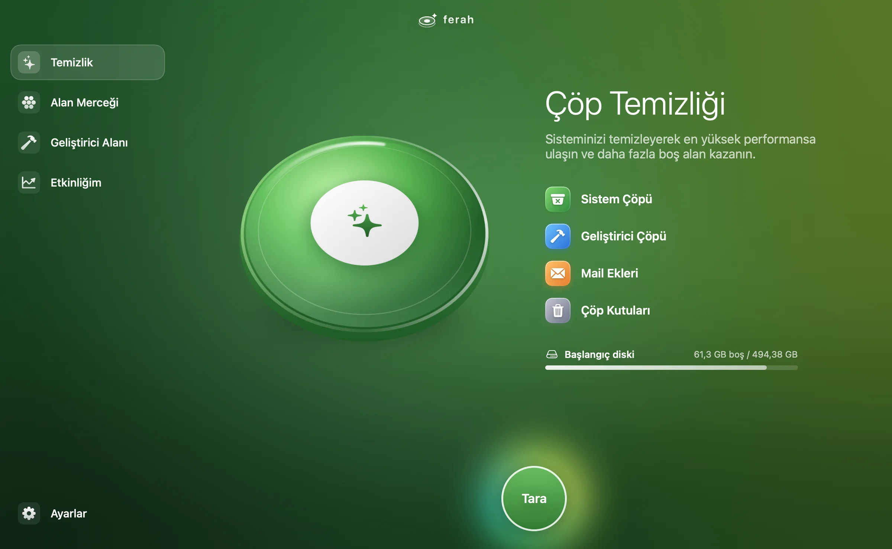
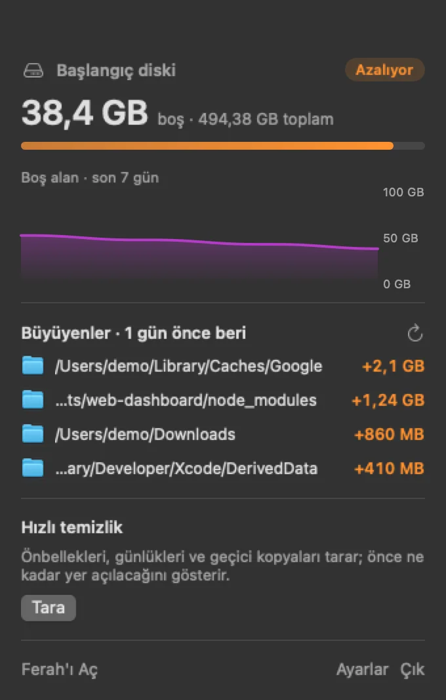
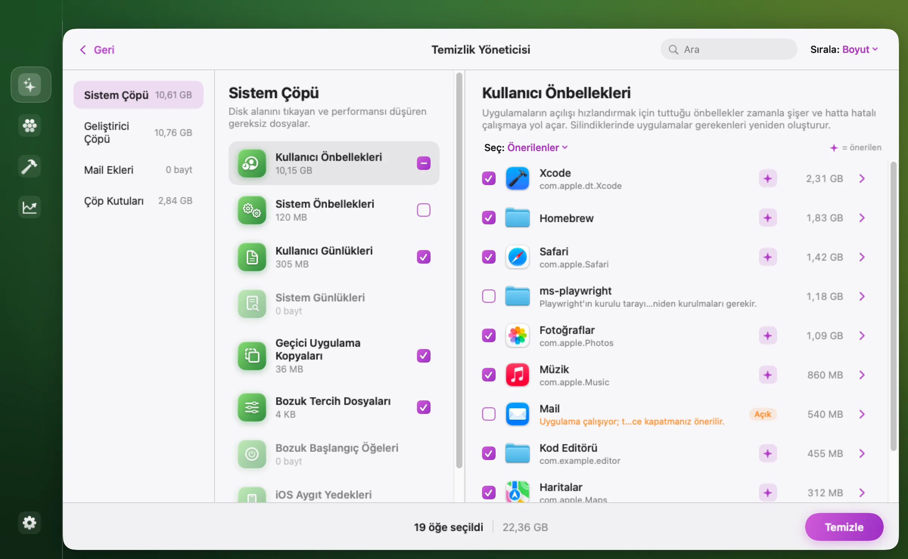
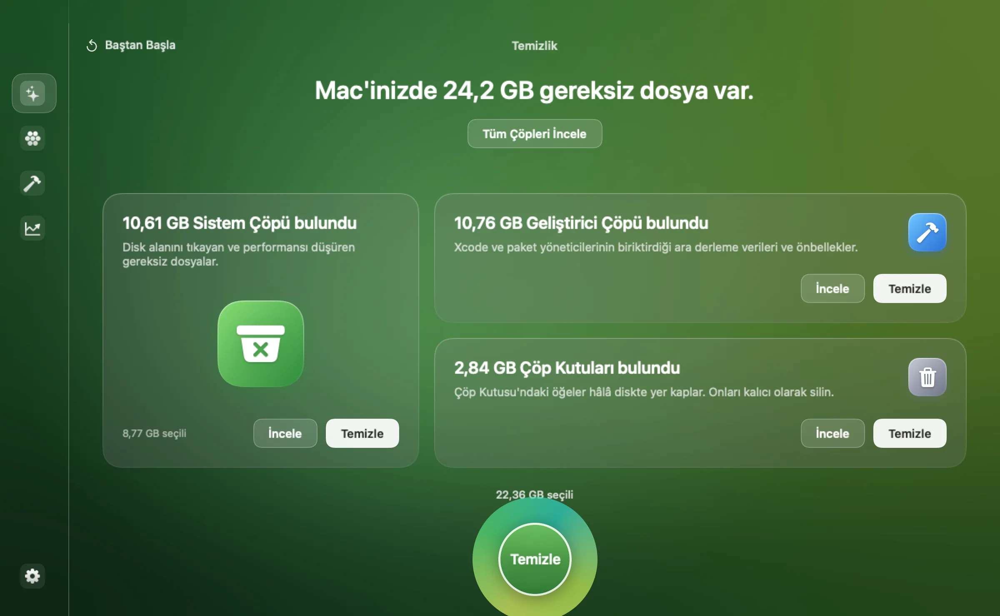
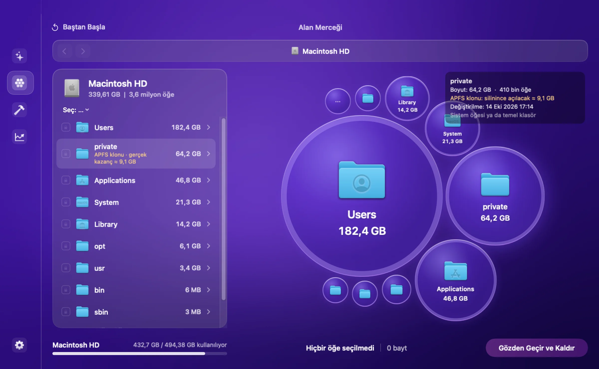
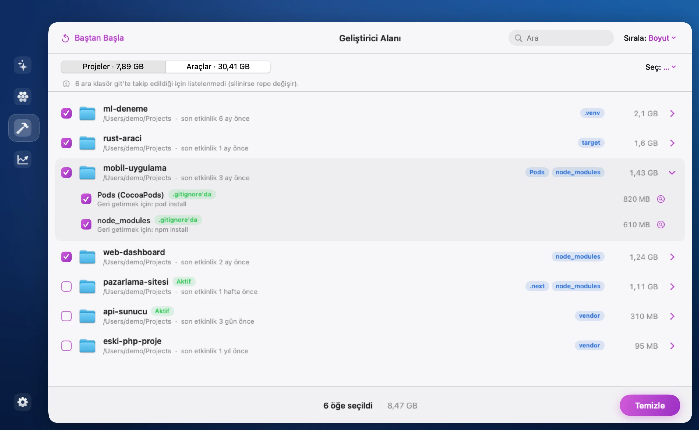
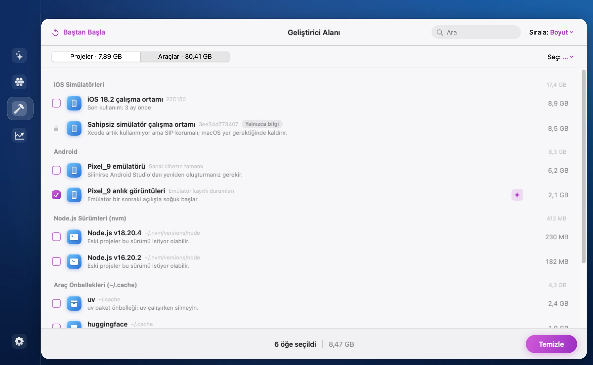

Gereksiz dosyaları bulur, diskinizi baloncuk haritasıyla gösterir, geliştiricilerin biriktirdiklerini ortaya çıkarır. Silmeden önce her şeyi size gösterir — ve rakamları şişirmez.


Uygulama önbellekleri, günlükler, Xcode ara verileri, çöp kutuları ve Mail ekleri tek taramada. Her öğe hangi uygulamaya ait olduğu ve neden güvenli olduğuyla birlikte listelenir.



Tüm diski, harici sürücüleri ya da tek bir klasörü saniyeler içinde tarar; en çok yer kaplayanları baloncuk haritasında büyüklükleriyle gösterir. Tıklayın, içine girin, seçin, kaldırın.
du'dan 2 kat hızlı ölçer*.APFS klonları aynı disk bloklarını paylaşır; çoğu araç onları her seferinde yeniden sayar. Ferah, silince gerçekten açılacak alanı ayrıca ölçer.
Örnek: bir tarayıcının geride bıraktığı 100 geçici uygulama kopyası.
Proje klasörlerinizde paket yöneticisiyle geri getirilebilen ara klasörleri bulur; hangi projeye ait olduğunu, ne zamandır dokunulmadığını ve nasıl geri geleceğini söyler.


Menü çubuğunda boş alanınızı gösterir; eşiğin altına inince bildirir. Arka planda düşük öncelikle ölçüm yapar ve son 24 saatte neyin büyüdüğünü söyler — "disk neden doldu?" sorusu tarih olur.
Bir temizlik aracının en önemli özelliği neyi silmediğidir. Ferah'ta her silme, tarayıcıdan bağımsız bir güvenlik katmanından geçer.
Silinecek her yol, önceden tanımlı güvenli konumların içinde olmak zorunda. Kökün kendisi asla.
Sembolik bağlar çözülerek kontrol edilir; bir bağ üzerinden Belgeler'e uzanmak imkânsız.
Git'te takip edilen klasörler listelenmez bile. Git dışındaki vendor klasörleri "tek kopya olabilir" diye önerilmez.
İsterseniz her şey kalıcı silinmek yerine Çöp Kutusu'na taşınır; fikrinizi değiştirmek için zamanınız olur.
Tam Disk Erişimi verilmediyse diğer uygulamaların verilerine hiç dokunmaz; izin pencereleriyle sizi yormaz.
Etkinliğim ekranı, şimdiye kadar ne kadar alan kazandığınızı ve her temizliği tarihiyle tutar.
Ferah.dmg dosyasını indirip açın, Ferah'ı Uygulamalar klasörüne sürükleyin.
Ferah henüz Apple tarafından notarize edilmedi. İlk açılışta uyarı çıkarsa Sistem Ayarları › Gizlilik ve Güvenlik'te Yine de Aç'a tıklayın. Bunu bir kez yapmanız yeterli.
Çöp Kutusu, Mail indirmeleri ve iOS yedekleri de taransın diyorsanız Tam Disk Erişimi verin. Vermezseniz Ferah bu konumları atlar.
Ferah önce ne bulduğunu ve neden güvenli olduğunu gösterir; hiçbir şey siz onaylamadan silinmez.
Önbellekler, günlükler ve proje ara klasörleri yeniden üretilebilir veridir; uygulamalar ihtiyaç duyduklarını kendileri oluşturur, npm install gibi komutlar paketleri geri getirir. Emin olmak istediğinizde silme yöntemini "Çöp Kutusu'na taşı" yapabilirsiniz.
Belgeleriniz, masaüstünüz, sistem dosyaları, Anahtar Zinciri, tercih dosyalarınızın sağlam olanları, iCloud senkron verileri ve git'te takip edilen her şey. Bunlar listelenmez ya da seçilemez.
Çöp Kutusu, Mail indirmeleri ve iOS yedekleri gibi macOS'un koruduğu konumları okuyabilmek için. Vermek zorunda değilsiniz; verilmezse Ferah bu konumları atlar ve size söyler.
Ferah bağımsız geliştirilen ücretsiz bir uygulama ve henüz Apple'ın ücretli notarizasyon sürecinden geçmedi. Uygulama internete bağlanmaz ve veri toplamaz; uyarıyı bir kez Sistem Ayarları › Gizlilik ve Güvenlik › Yine de Aç ile geçmeniz yeterli.
APFS klonları ve sabit bağlar aynı disk alanını paylaşır. Ferah sabit bağları bir kez sayar ve klonlarda silince gerçekten açılacak alanı ayrıca gösterir. Sonuç bazen daha küçük ama gerçek bir rakamdır.